Hello, I’m Joshua.
Hello, I’m Joshua.
I design, prototype and build interfaces.
This site will walk you through a couple of my most recent projects, show you some earlier work, then talk a bit about my beliefs and influences.
I created a single responsive design to combine made.com’s desktop & mobile sites.
Made is a designer furniture brand with an annual turnover above £40m. All their sales are made through the website.
New Responsive Product Page
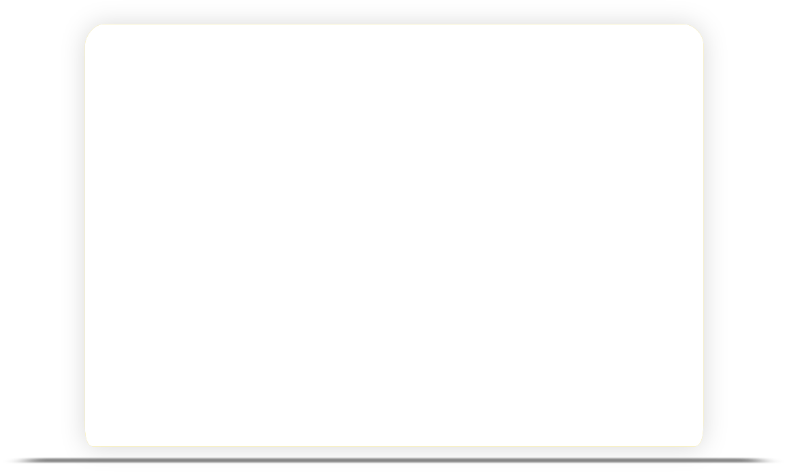
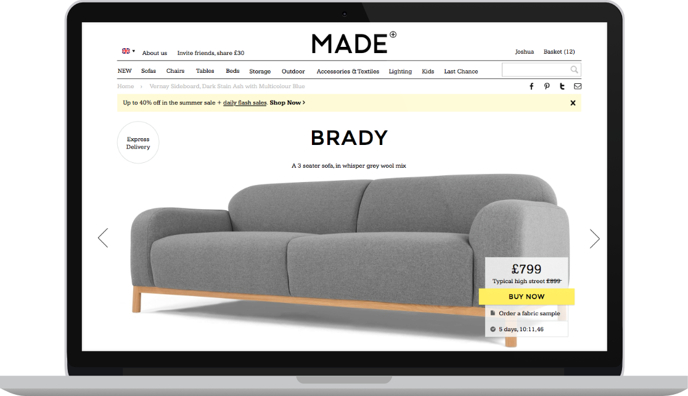
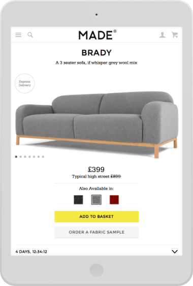
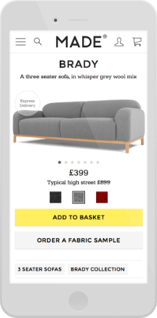
New Responsive Home Page
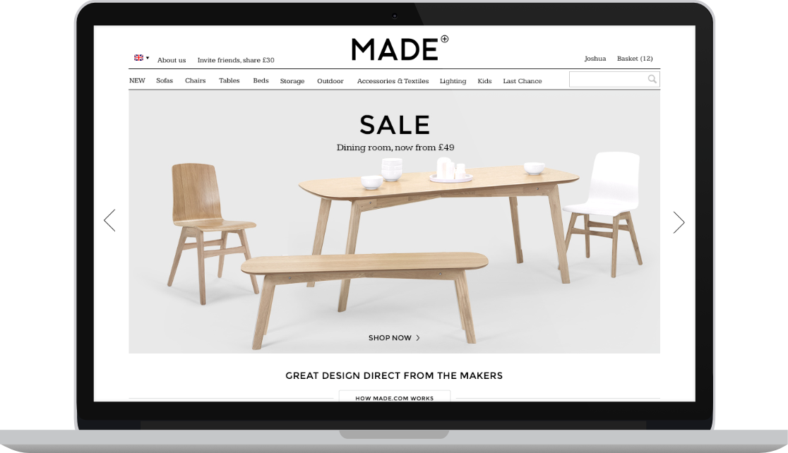
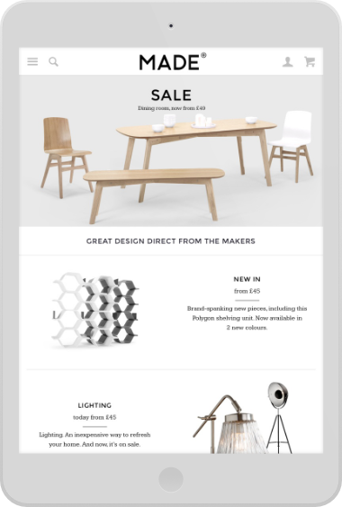
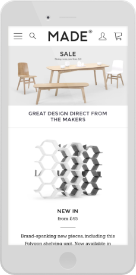
Information Architecture
I created low-fidelity mockups to let project teams agree on the broad strokes of information design without the distraction of cosmetic detail.
UX & Flow Design Prototyping
I presented usable flow prototypes from day one. Working in rapid, collaborative cycles of testing, feedback and design iteration gets me further.
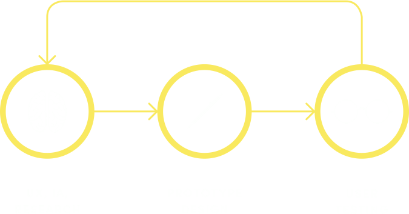
Early results are overwhelmingly positive- we saw a 30% uplift in mobile conversion, and a 40% reduction in calls to the help centre.
I worked with The Line of Best Fit to redesign and restructure their site, refreshing the brand and putting content before taxonomy.
The Line of Best Fit is a popular music platform based in London. The site receives over 6m unique visitors per year.
Process
I got ideas down fast, used wireframes to work on modularity, then crafted and iterated designs using real content.
New Article Page
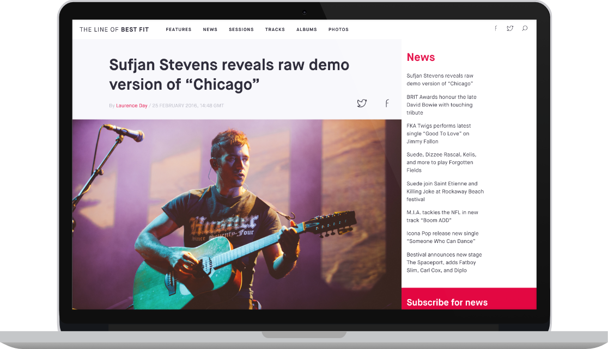
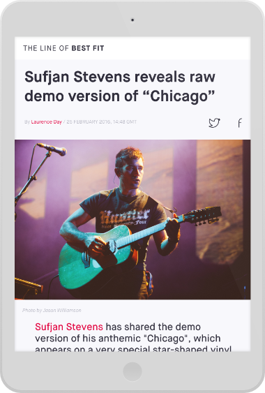
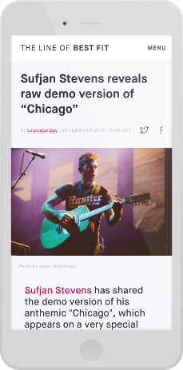
New Home Page
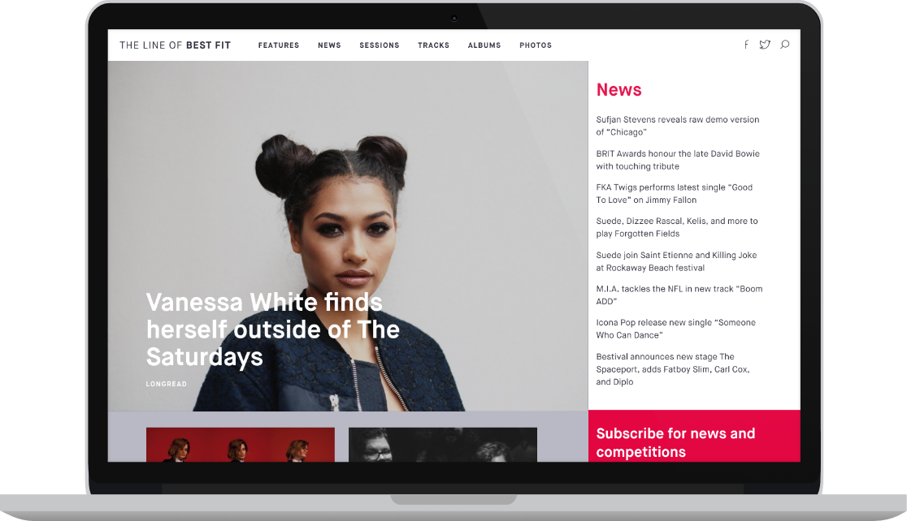
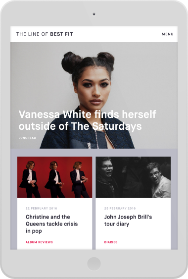
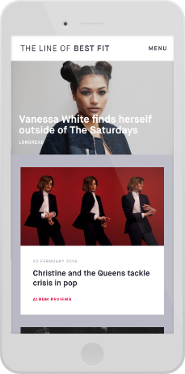
New Listing Page
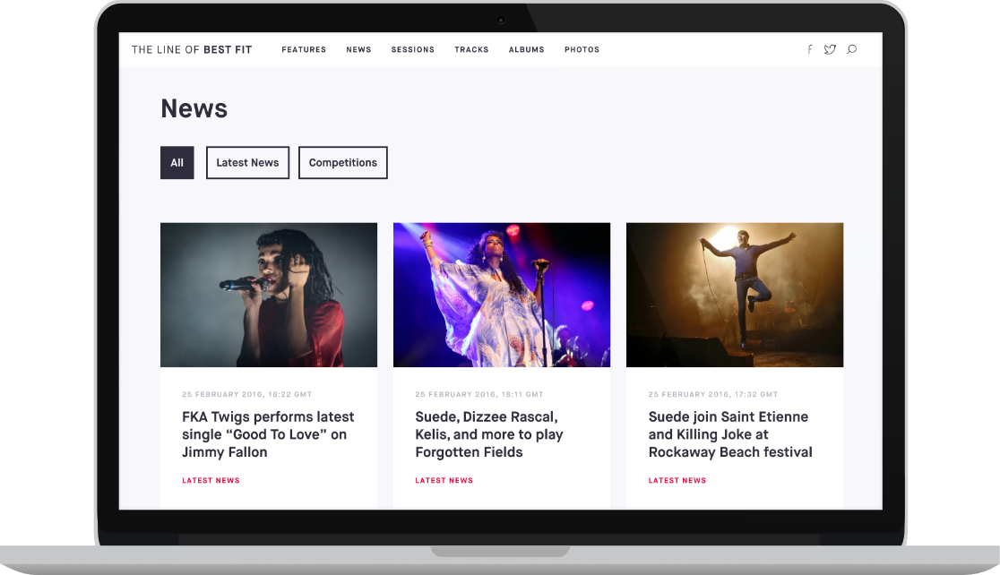
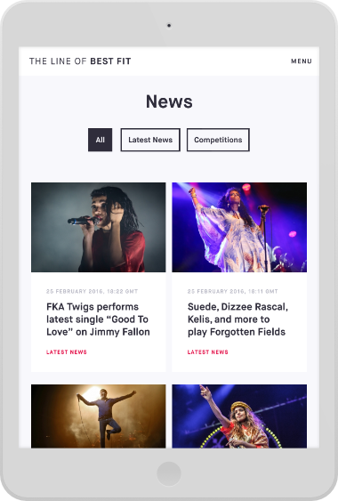
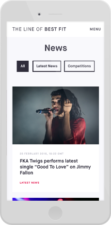
After completing the designs, I built and tested an HTML pattern library with all the necessary components to build the site templates.
Now for some of my earlier work…
I co-founded Shoreditch Works, a London startup co-working community & events business.
- We raised £90k on Kickstarter
- 100+ full time members
- Three central London spaces
- Events for IBM, Node.js Foundation and more
I co-founded Penrose, a digital consultancy with clients from sectors including health, property, education, personal data, geopolitics and charity.
- Enabled CTRLio to raise £1m in funding and launch their first product
- Virgin Business innovation award for work with the Anna Freud Centre